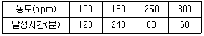
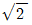
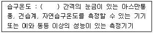
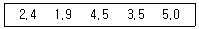
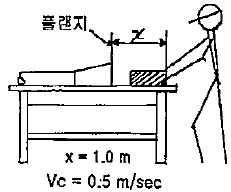
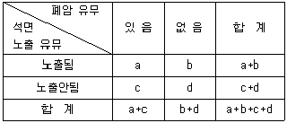
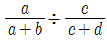
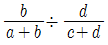
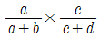
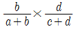

산업위생관리기사 (2011-06-12 기출문제)
1과목: 산업위생학개론
1. 다음 중 최근 실내공기질에서 문제가 되고 있는 방사성물질인 라돈에 관한 설명으로 틀린 것은?
- 자연적으로 존재하는 암석이나 토양에서 발생하는 thorium, uranium의 붕괴로 인해 생성되는 방사성 가스이다.
- 무색, 무취, 무미한 가스로 인간의 감각에 의해 감지할 수 없다.
- 라돈의 감마(γ)-붕괴에 의하여 라돈의 딸핵종이 생성되며 이것이 기관지에 부탁되어 감마선을 방출하여 폐암을 유발한다.
- 라돈의 동위원소에는 Rn222, Rn220, Rn219, 가 있으며 이 중 반감기가 긴 Rn-222가 실내 공간에서 일체의 위해성 측면에서 주요 관심대상이다.
(정답률: 73%)

2. 다음 중 작업환경조건과 피로의 관계를 올바르게 설명한 것은?
- 소음은 정신적 피로의 원인이 된다.
- 온열조건은 피로의 원인으로 포함되지 않으며, 신체적 작업밀도와 관계가 없다.
- 정밀작업시의 조명은 광원의 성질에 관계없이 100럭스(Lux) 정도가 적당하다.
- 작업자의 심리적 요소는 작업능률과 관계되고, 피로의 직접요인이 되지는 않는다.
(정답률: 79%)
3. 산업안전보건법에 따라 지정된 석면해체·제거입자로 하여금 그 석면을 해체·제거하도록 하여야 하는데 다음 중 석면해체·제거 대상에 해당하는 것은?
- 석면이 0.1wt%를 초과하여 함유된 분무재 또는 내화 피복재를 사용한 경우
- 석면이 0.5wt%를 초과하여 함유된 단열재, 보은재에 해당하는 자재의 면적의 합이 5m2 이상인 경우
- 파이프에 사용된 보온재에서 석면이 0.5wt%를 초과하여 함유되어 있고, 그 보온재 길이의 합이 50m 이상인 경우
- 철거ㆍ해체하려는 벽체재료, 바닥재, 천장재 및 지붕재 등의 자재에 석면이 1wt%를 초과하여 함유되어 있고 그 자재의 면적의 합이 50m2 이상인 경우
(정답률: 62%)
4. 다음 중 산업안전보건법에 따라 건강관리수첩의 발급 대상에 해당하지 않은 사람은?
- 설비 또는 건축물에 분무된 석면을 해체·제거 또는 보수하는 업무에 1년 이상 종사한 사람
- 염화비닐을 제조하거나 사용하는 석유화학설비를 유지·보수하는 업무에 4년 이상 종사한 사람
- 갱내에서 암석 등을 차량계 건설기계로 싣거나 내리거나 쌓아두는 장소에서의 작업에 1년 이상 종사한 사람으로 흉부방사선 사진상 진폐증이 있다고 인정되는 사람
- 옥내에서 동력을 사용하여 암석 또는 광물을 조각하거나 마무리하는 장소에서의 작업에 3년 이상 조사한 사람으로 흉부방사선 사진상 진폐증이 있다고 인정되는 사람
(정답률: 64%)
5. 다음 중 산소부채(oxygen debt)에 관한 설명으로 틀린 것은?
- 작업대사량의 증가와 관계없이 산소소비량은 계속 증가한다.
- 산소부채 현상은 작업이 시작되면서 발생한다.
- 작업이 끝난 후에는 산소부채의 보상현상이 발생한다.
- 작업강도에 따라 필요한 산소요구량과 산소공급량의 차이에 의하여 산소부채 현상이 발생한다.
(정답률: 80%)
6. 기초대사량이 1500kcal/day이고, 작업대사량이 시간당 250kcal가 소비되는 작업을 8시간 동안 수행하고 있을 때 작업대사율(RMR)은 약 얼마인가?
- 0.17
- 0.75
- 1.33
- 6
(정답률: 53%)
7. 어떤 물질에 대한 작업환경을 측정한 결과 다음과 같은 TWA 결과값을 얻었다. 환산된 TWA는 약 얼마인가?

- 169ppm
- 198ppm
- 220ppm
- 256ppm
(정답률: 73%)
8. 다음 중 산업위생의 역사에 있어 가장 오래된 것은?
- Pott : 최초의 직업성 암 보고
- Agricola : 먼지에 의한 규폐증 기록
- Galen : 구리광산에서의 산(酸)의 위험성 보고
- Hamilton : 유해물질 노출과 질병과의 관계 규명
(정답률: 50%)
9. 미국산업안전보건연구원(NIOSH)에서 제시한 중량물의 들기작업에 관한 강시기준(Action Limit)과 최대허용 기준(Maximum Permissible Limit)의 관계를 올바르게 나타낸 것은?
- MPL =

AL - MPL = 3AL
- MPL = 5AL
- MPL = 10AL
(정답률: 82%)
10. 다음 중 근골격계 질환에 관한 설명으로 틀린 것은?
- 점액낭염(bursitis)은 관절 사이의 윤활액을 싸고 있는 윤활낭에 염증이 생기는 질병이다.
- 근염(myositis)은 근육이 잘못된 자세, 외부의 충격, 과도한 스트레스 등으로 수축되어 굳어지면 근섬유의 일부가 띠처럼 단단하게 변하여 근육의 특정 부위에 압통, 방사통, 목부위 운동제한, 두통 등의 증상이 나타난다.
- 수근관 증후군(carpal tunnel sysdrome)은 반복적이고, 지속적인 손목의 압박, 무리한 힘 등으로 인해 수근관 내부에 정중신경이 손상되어 발생한다.
- 건초염(tenosimovitis)은 건막에 염증이 생긴 질환이며, 건염(tendonitis)은 건의 염증으로, 건염과 건초염을 정확히 구분하기 어렵다.
(정답률: 69%)
11. 산업재해의 직접원인을 크게 인적 원인과 물적 원인으로 구분할 때 다음 중 물적 원인에 해당하는 것은?
- 복장·보호구의 결함
- 위험물 취급 부주의
- 안전장치의 기능 제거
- 위험 장소의 접근
(정답률: 71%)
12. 다음 중 교대작업에서 작업주기 및 작업순환에 대한 설명으로 틀린 것은?
- 교대 근무시간 : 근로자의 수면을 방해하지 않아야 하며, 아침 교대시간은 아침 7시 이후에 하는 것이 바람직하다.
- 교대근무 순환주기 : 주간 근무조→저녁 근무조→야간 근무조로 순환하는 것이 좋다.
- 근무조 변경 : 근무시간 종료 후 다음 근무시작 시간까지 최소 10시간 이상의 휴식 시간이 있어야 하며, 특히, 야간 근무조 후에는 12~24시간 정도의 휴식이 있어야 한다.
- 작업배치 : 상대적으로 가벼운 작업을 야간 근무조에 배치하고, 업무 내용을 탄력적으로 조정한다.
(정답률: 79%)
13. 다음 중 화학적 원인에 의한 직업성 질환으로 볼 수 없는 것은?
- 수전증
- 치아산식증
- 시신경장해
- 정맥류
(정답률: 76%)
14. 다음 중 산업안전보건법상 대상화학물질에 대한 물질안전 보건자료(MSDS)로부터 알 수 있는 정보가 아닌 것은?
- 응급조치요령
- 법적규제 현황
- 주요성분 검사방법
- 노출방지 및 개인보호구
(정답률: 65%)
15. 다음 중 미국산업위생학회(AIHA)의 산업위생에 대한 정의에서 제시된 4가지 활동과 거리가 먼 것은?
- 예측
- 평가
- 관리
- 보완
(정답률: 89%)
16. 다음 중 산업재해 보상에 관한 설명으로 틀린 것은?
- “업무상의 재해”란 업무상의 사유에 따른 근로자의 부상·질병·장해 또는 사망을 말한다.
- “유족”이란 사망한 자의 손자녀·조부모 또는 형제자매를 제외한 가족의 기본구성인 배우자ㆍ자녀ㆍ부모를 말한다.
- "치유”란 부상 또는 질병이 완치되거나 치료의 효과를 더 이상 기대할 수 없고 그 증상이 고정된 상태에 이르게 된 것을 말한다.
- “장해”란 부상 또는 질병이 치유되었으나 정신적 또는 육체적 훼손으로 인하여 노동능력이 상실되거나 감소된 상태를 말한다.
(정답률: 82%)
17. 산업위생전문가의 윤리강령 중 “전문가로서의 책임”과 가장 거리가 먼 것은?
- 기업체의 기밀은 누설하지 않는다.
- 과학적 방법의 적용과 자료의 해석에서 객관성을 유지한다.
- 근로자, 사회 및 전문 직종의 이익을 위해 과학적 지식은 공개하거나 발표하지 않는다.
- 전문적 판단이 타협에 의하여 좌우될 수 있는 상황에는 개입하지 않는다.
(정답률: 84%)
18. 사무실 공기관리 지침에서 지정하는 오염물질에 대한 시료채취 방법이 잘못 연결된 것은?
- 오존 - 멤브레인 필터를 이용한 채취
- 일산화탄소 - 전기화학 검출기에 의한 채취
- 이산화탄소 - 비분산적외선 검출기에 의한 채취
- 총부유세균 - 여과법을 이용한 부유세균채취기로 채취
(정답률: 48%)
19. 다음 중 직업성 질환으로 볼 수 없는 것은?
- 분진에 의하여 발생되는 진폐증
- 화학물질의 반응으로 인한 폭발 후유증
- 화학적 유해인자에 의한 중독
- 유해광선, 방사선 등의 물리적 인자에 의하여 발생되는 질환
(정답률: 93%)
20. 마이스터(D. Meister)가 정의한 시스템으로부터 요구된 작업결과(Performance)로부터의 차이(Deviation)는 무엇을 말하는가?
- 인간실수
- 무의식 행동
- 주변적 동작
- 지름길 반응
(정답률: 72%)
2과목: 작업위생측정 및 평가
21. 유량, 측정시간, 회수율 및 분석에 의한 오차가 각각 18, 3, 9, 5% 일 때 누적오차는?
- 약 18%
- 약 21%
- 약 24%
- 약 29%
(정답률: 74%)
22. 다음은 고열 측정구분에 의한 측정기기와 측정시간에 관한 내용이다. ( )안에 옳은 내용은? (단, 고시 기준)

- 0.1도
- 0.2도
- 0.5도
- 1.0도
(정답률: 74%)
23. 어느 작업장의 소음 레벨을 측정한 결과 85dB, 87dB, 84dB, 86dB, 89dB, 81dB, 82dB, 84dB, 83dB, 88dB을 각각 얻었다. 중앙치(median : dB)는?
- 83.5
- 84.0
- 84.5
- 85.0
(정답률: 70%)
24. 미국 ACGIH에 의하면 호흡성먼지는 가스교환부위, 즉 폐포에 침착할 때 유해한 물질이다. 평균입경을 얼마로 정하고 있는가?
- 1.5μm
- 2.5μm
- 4.0μm
- 5.0μm
(정답률: 87%)
25. 음향출력 5.0 watt 인 소음원으로부터 3m되는 지점에서의 응압수준은? (단, 무지향성 점응원, 자유공간 기준)
- 102dB
- 106dB
- 112dB
- 116dB
(정답률: 60%)
26. 일정한 온도 조건에서 부피와 압력은 반비례한다는 표준 가스에 대한 법칙은?
- 보일의 법칙
- 샤를의 법칙
- 게이-루삭의 법칙
- 라울트의 법칙
(정답률: 74%)
27. 2차 표준기구 중 일반적 사용범위가 10~150 L/min이고 정확도는 ±1.0%이며 현장에서 사용하는 것은?
- 건식가스 미터
- 폐활량계
- 열선 기류계
- 유리 피스톤 미터
(정답률: 65%)
28. 메틸에틸케톤이 20℃, 1기압에서 증기압이 71.2mmHg이면 공기 중 포화농도(ppm)는?
- 63700
- 73700
- 83700
- 93700
(정답률: 66%)
29. 수동식 시료채취기(Passive Sampler)로 8시간 동안 벤젠을 포집하였다. 포집된 시료를 GC를 이용하여 분석한 결과 20,000 ng이었으며 공시료는 0 ng이었다. 회사에서 제시한 벤젠의 시료채취량은 35.6mL분이고 탈착효율은 0.96이라면 공기 중 농도는 몇 ppm인가? (단, 벤젠의 분자량은 78, 25℃, 1기압 기준)
- 0.38
- 1.22
- 5.87
- 10.57
(정답률: 44%)
30. 가스상 물질 측정을 위한 흡착제인 다공성 종합체에 관한 설명으로 옳지 않은 것은?
- 활성탄보다 비표면적이 크다.
- 특별한 물질에 대한 선택성이 좋은 경우가 있다.
- 대부분의 다공성 중합체는 스티렌, 에틸비닐벤젠 혹은 디비닐벤젠 중 하나와 극성을 띤 비닐화합물과의 공중합체이다.
- 상품명으로는 Tenax tube, XAD tube 등이 있다.
(정답률: 41%)
31. 흡착제를 이용하여 시료채취를 할 때 영향을 주는 인자에 관한 설명으로 옳지 않은 것은?
- 온도 : 고온일수록 흡착능이 감소하여 파과가 일어나기 쉽다.
- 시료채취속도 : 시료채취속도가 높고 코팅된 흡착제일수록 파과가 일어나기 쉽다.
- 오염물질 농도 : 공기 중 오염물질의 농도가 높을수록 파과용량(흡착제에 흡착된 오염물질의 양)이 감소한다.
- 습도 : 극성 흡착제를 사용할 때 수증기가 흡착되기 때문에 파과가 일어나기 쉽다.
(정답률: 65%)
32. 실내공간이 100m3인 빈 실험실에 MEK(methyl ethyl ketone) 2mL가 기화되어 완전히 혼합되었다고 가정하면 이 때 실내의 MEK농도는 몇 ppm인가? (단, MEK qlwnd=0.8⑤, 분자량=72.1, 25℃, 1기압 기준)
- 약 2.3
- 약 3.7
- 약 4.2
- 약 5.5
(정답률: 56%)
33. 가스상 물질의 측정을 위한 수동식 시료채취(기)에 관한 설명으로 옳지 않은 것은?
- 수동식 시료채취기는 능동식에 비해 시료채취속도가 매우 낮다.
- 오염물질의 확산, 투과를 이용하므로 농도 구배에 영향을 받지 않는다.
- 수동식 시료채취기의 원리는 Fick's의 확산 제1법칙으로 나타낼 수 있다.
- 산업위생전문가의 입장에서는 펌프의 보정이나 충전에 드는 시간과 노동력을 절약할 수 있다.
(정답률: 38%)
34. 조선소에서 용접흄(분진)을 측정한 결과 여과지의 포집전 무게는(3회 평균) 0.03561g이었고, 포집 후 무게(3회 평균)는 0.03901g 이었다. 이 때 용접흄(분진)의 농도는? (단, 포집유량은 분당 1.7L, 190분 포집)
- 약 4.2mg/m3
- 약 5.3mg/m3
- 약 8.1mg/m3
- 약 10.5mg/m3
(정답률: 59%)
35. 셀룰로오스 에스테르 막여과지에 관한 설명으로 옳지 않은 것은?
- 산에 쉽게 용해된다.
- 중금속 시료채취에 유리하다.
- 유해물질이 표면에 주로 침착된다.
- 흡습성이 적어 중량분석에 적당하다.
(정답률: 75%)
36. 근로자에게 노출되는 호흡성먼지를 측정한 결과 다음과 같았다. 이 때 기하평균농도는? (단, 단위는 mg/m3)

- 3.04
- 3.24
- 3.54
- 3.74
(정답률: 64%)
37. 흡광광도 측정에서 최초광의 70%가 흡수될 경우 흡광도는?
- 0.28
- 0.35
- 0.52
- 0.73
(정답률: 49%)
38. 금속제품을 탈지 세정하는 공정에서 사용하는 유기용제인 트리클로로에틸렌의 근로자 노출농도를 측정하고자 한다. 과거의 노출농도를 조사해 본 결과, 평균 50ppm이었다. 활성탄관(100mg/50mg)을 이용하여 0.4L/min으로 채취하였다면 채취해야 할 최소한의 시간(분)은? (단, 트리클로로에틸렌의 분자량 : 131.39, 가스크로마토 그래피의 장량한계 : 시료당0.5mg, 1기압, 25℃ 기준으로 기타 조건은 고려하지 않음)
- 약 4.7분
- 약 6.2분
- 약 8.6분
- 약 9.3분
(정답률: 50%)
39. 실리카겔이 활성탄에 비해 갖는 특징으로 옳지 않은 것은?
- 극성물질을 채취한 경우 물, 메탄올 등 다양한 용매로 쉽게 탈착되고, 추출액이 화학분석이나 기기분석에 방해 물질로 작용하는 경우가 많지 않다.
- 활성탄에 비해 수분을 잘 흡수하여 습도에 민감하다.
- 유독한 이황화탄소를 탈착 용매로 사용하지 않는다.
- 활성탄으로 채취가 쉬운 아닐린, 오르쏘-틀루이딘 등의 아민류는 실리카겔 채취가 어렵다.
(정답률: 52%)
40. 작업장에서 입자상 물질은 대개 여과원리에 따라 시료를 채취한다. 여과지의 공극보다 작은 입자가 여과지에 채취되는 기전은 여과이론으로 설명할 수 있는데 다음 중 여과이론에 관여되는 기전과 가장 거리가 먼 것은?
- 중력 침강
- 정전기적 침강
- 체질
- 흡수
(정답률: 37%)
3과목: 작업환경관리대책
41. 다음은 작업환경개선 대책 중 대치의 방법을 열거한 것이다. 이 중 공정변경의 대책과 가장 거리가 먼 것은?
- 금속을 두드려서 자르는 대신 톱으로 자름
- 흄 배출용 드래프트 창 대신에 안전유리로 교체함
- 작은 날개로 고속 회전시키는 송풍기를 큰 날개로 저속회전시킴
- 자동차 산업에서 땜질한 납 연마시 고속회전 그라인더의 사용을 저속 Oscillating-type sander로 변경함
(정답률: 56%)
42. 용접작업대에 그림과 같은 외부식 후드를 설치할 때 개구면적이 0.3m2이면 송풍량은? (단, Vc : 제어속도)

- 약 150m3/min
- 약 155m3/min
- 약 160m3/min
- 약 165m3/min
(정답률: 54%)
43. 환기시스템에서 공기유량(Q)이 0.15m3/sec, 덕트 직경이 10.0cm, 후드 압력손실 계수(Fh)가 0.4일 때 후드 정압(SPh)은? (단, 공기밀도 : 1.25kg/m3 기준)
- 약 31 mmH2O
- 약 38 mmH2O
- 약 43 mmH2O
- 약 48 mmH2O
(정답률: 49%)
44. 풍량 2m3/sec, 송풍기 유효전압 100mmH2O, 송풍기의 효율이 75% 인 송풍기의 소요동력은?
- 2.6 kW
- 3.8 kW
- 4.4 kW
- 5.3 kW
(정답률: 51%)
45. 높이 760mm, 폭 380mm인 각관 내를 풍량 280 m3/min의 표준공기가 흐르고 있을 때 길이 10m 당 관마찰손실은? (단, 관 마찰계수는 0.019)
- 약 6mmH2O
- 약 7mmH2O
- 약 8mmH2O
- 약 9mmH2O
(정답률: 34%)
46. 층류영역에서 직경이 2μm이며 비중이 3인 입자상 물질의 침강속도(cm/sec)는?
- 0.032
- 0.036
- 0.042
- 0.046
(정답률: 77%)
47. 덕트 합류시 댐퍼를 이용한 균형 유지법의 장단점으로 가장 거리가 먼 것은?
- 임의로 댐퍼 조정시 평형 상태가 깨짐
- 시설 설치 후 변경에 대한 대처가 어려움
- 설계계산이 상대적으로 간단함
- 설치 후 부적당한 배기유량의 조절이 가능
(정답률: 52%)
48. A용제가 800m3의 체적을 가진 방에 저장되어 있다. 공기를 공급하기 전에 측정한 농도는 400ppm이었다. 이 방으로 환기량 40m3/분을 공급한다면 노출기준인 100ppm으로 달성되는데 걸리는 시간은? (단, 유해물질 발생은 정지, 환기만 고려함)
- 약 12분
- 약 14분
- 약 24분
- 약 28분
(정답률: 64%)
49. 실험실에 있는 포위식 후드의 필요 환기량을 구하고자 한다. 제어속도는 0.5m/초이고, 개구면적이 0.5m×0.3m일 때 필요 환기량(m3/분)은?
- 0.075m3/분
- 0.45m3/분
- 4.5m3/분
- 7.5m3/분
(정답률: 57%)
50. 입자상 물질을 처리하기 위한 장치 중 압력손실은 비교적 크나 고효율 집진이 가능하며, 직접차단, 관성충돌, 확산, 중력침강 및 정전기력 등이 복합적으로 작용하는 것은 무엇인가?
- 관성력집진장치
- 원심력집진장치
- 여과집진장치
- 전기집진장치
(정답률: 54%)
51. 길이가 2.4m, 폭이 0.4m 인 플랜지 부착 슬로트형 후드가 설치되어 있다. 포측점까지의 거리가 0.5m, 제어속도가 0.75 m/s 일 때 필요 송풍량은? (단, 1/2 원주 슬로트형, C=2.8 적용)
- 142.5 m3/min
- 151.2 m3/min
- 161.3 m3/min
- 182.9 m3/min
(정답률: 50%)
52. 작업환경관리 원칙 중 대치에 관한 설명으로 옳지 않은 것은?
- 야광시계 자판에 Radium을 인으로 대치한다.
- 건조 전에 실시하던 점토배합을 건조 후 실시한다.
- 금속세척 작업시 TCE를 대신하여 계면활성제를 사용한다.
- 분체 입자를 큰 입자로 대치한다.
(정답률: 74%)
53. 자연환기와 강제환기에 관한 설명으로 옳지 않은 것은?
- 강제환기는 외부조건에 관계없이 작업환경을 일정하게 유지시킬 수 있다.
- 자연환기는 환기량 예측자료를 구하기가 용이하다.
- 자연환기는 적당한 온도차와 바람이 있다면 상당히 비용면에서 효과적이다.
- 자연환기는 외부 기상조건과 내부 작업조건에 따라 환기량 변화가 심하다.
(정답률: 80%)
54. 폭 320mm, 높이 760mm의 곧은 각관 내를 Q=280m3/분의 표준공기가 흐르고 있을 때 레이놀드수(Re)값은? (단, 동점성계수는 1.5 × 10-5 m2/sec)이다.)
- 5.76 X 105
- 5.76 X 106
- 8.76 X 105
- 8.76 X 106
(정답률: 30%)
55. 보호구에 관한 설명으로 옳지 않은 것은?
- 방진마스크의 흡기저항과 배기저항은 모두 낮은 것이 좋다.
- 방진마스크의 포집효율과 흡기저항 상승률은 모두 높은 것이 좋다.
- 방독마스크는 사용 중에 조금이라도 가스냄새가 나는 경우 새로운 정화통으로 교체하여야 한다.
- 방독마스크의 흡수제는 활성탄, 실리카겔, sodalime 등이 사용된다.
(정답률: 81%)
56. 원심력 송풍기인 방사날개형 송풍기에 관한 설명으로 옳지 않은 것은?
- 플레이트송풍기 또는 평판형-송풍기라고도 한다.
- 깃이 평판으로 되어 있고 강도가 매우 높게 설계되어 있다.
- 깃의 구조가 분진을 자체 정화할 수 있도록 되어 있다.
- 견고하고 가격이 저렴하며 효율이 높은 장점이 있다.
(정답률: 73%)
57. 후드의 유입계수가 0.86, 속도압 25mmH20 일 때 후드의 압력손실(mmH20)은?
- 8.8
- 12.2
- 15.4
- 17.2
(정답률: 61%)
58. 전기집진장치의 장점과 가장 거리가 먼 것은?
- 비교적 압력손실이 낮다.
- 대량의 가스 처리가 가능하고, 배출가스의 온도 강하가 적다.
- 전압변동과 같은 조건변동에 쉽게 적응하기 쉽다.
- 유지관리가 용이하고, 유지비가 저렴하다.
(정답률: 58%)
59. 작업장 용적이 10m × 3m × 40m 이고 필요 환기량이 120m3/min일 때 시간당 공기교환 횟수는 얼마인가?
- 360회
- 60회
- 6회
- 0.6회
(정답률: 70%)
60. A공장에서 1시간에 4L의 메틸에틸케톤이 증발되어 공기를 오염시키고 있다면 이 작업장을 전체 환기하기 위한 필요 환기량(m3/min)은? (단, 21℃, 1기압, K=6, 분자량 72.06, 비중 0.8⑤, 허용기준 TLV 200ppm 이다.)
- 약 280
- 약 370
- 약 480
- 약 540
(정답률: 53%)
4과목: 물리적유해인자관리
61. 다음 중 마이크로파의 에너지량과 거리와의 관계에 관한 설명으로 옳은 것은?
- 에너지량은 거리의 제곱에 비례한다.
- 에너지량은 거리에 비례한다.
- 에너지량은 거리의 제곱에 반비례한다.
- 에너지량은 거리에 반비례한다.
(정답률: 68%)
62. 다음 중 인체와 환경 사이의 열교환에 영향을 미치는 요소와 관계가 가장 적은 것은?
- 기온
- 기압
- 대류
- 증발
(정답률: 51%)
63. 다음 중 이상기압의 대책에 관한 설명으로 적적하지 않은 것은?
- 고압실 내의 작업에서는 탄산가스의 분압이 증가하지 않도록 신선한 공기를 송기한다.
- 고압환경에서 작업하는 근로자에게는 질소의 양을 증가시킨 공기를 호흡시킨다.
- 귀 등의 장해를 예방하기 위하여 압력을 가하는 속도를 매 분당 0.8kg/cm2 이하가 되도록 한다.
- 감압병의 증상이 발생하였을 때에는 환자를 바로 원래의 고압환경 상태로 복귀시키거나, 인공고압실에서 천천히 감압한다.
(정답률: 72%)
64. 다음 중 소음성 난청(Noise Induced Hearing Loss, NIHL)에 관한 설명으로 틀린 것은?
- 소음성 난청은 4000Hz 정도에서 가장 많이 발생한다.
- 일시적 청력 변화 때의 각 주파수에 대한 청력 손실의 양상은 같은 소리에 의하여 생긴 영구적 청력 변화 때의 청력손실 양상과는 다르다.
- 심한 소음에 반복하여 노출되면 일시적 청력 변화는 영구적 청력 변화(Permanent Threshold Shift)로 변하며 코르티 기관에 손상이 온 것이므로 회복이 불가능하다.
- 심한 소음에 노출되면 처음에는 일시적 청력 변화(Temporary threshold Shift)를 초래하는데, 이것은 소음 노출을 그치면 다시 노출전의 상태로 회복되는 변화이다.
(정답률: 53%)
65. 다음 중 산소결핍 장소의 출입시 착용하여야 할 보호구로 적절하지 않은 것은?
- 공기호흡기
- 송기마스크
- 방독마스크
- 에어라인마스크
(정답률: 81%)
66. 다음 중 적외선의 파장 범위에 해당하는 것은?
- 280nm 이하
- 280~400nm
- 400~750nm
- 800~1200nm
(정답률: 37%)
67. 다음 중 소음에 대한 대책으로 적절하지 않은 것은?
- 차음효과는 밀도가 큰 재질일수록 좋다.
- 흡음효과를 높이기 위해서는 흡음재를 실내의 등이나 가장자리에 부착시키는 것이 좋다.
- 저주파성분이 큰 공장이나 기계실 내에서는 다공질 재료에 의한 흡음처리가 효과적이다.
- 흡음효과에 방해를 주지 않기 위해서 다공질 재료 표면에 중이를 입혀서는 안된다.
(정답률: 60%)
68. 응압실효치가 0.2N/m2 일 때 음압수준(SPL : Sound Pressure Level)은 얼마인가? (단, 기준음압은 2 x 10-5N/m2로 계산한다)
- 100dB
- 80dB
- 60dB
- 40dB
(정답률: 65%)
69. 다음 중 작업장 내의 직접조명에 관한 설명으로 옳은 것은?
- 장시간 작업시에도 눈이 부시지 않는다.
- 작업장 내의 균일한 조도의 확보가 가능하다.
- 조명기구가 간단하고, 조명기구의 효율이 좋다.
- 벽이나 천정의 색조에 좌우되는 경향이 있다.
(정답률: 61%)
70. 옥내의 작업장소에서 습구흑구온도를 측정한 결과 자연습구온도가 28도, 흑구온도는 30도, 건구온도는 25도를 나타내었다. 이 때 습구흑구온도지수(WBGT)는 약 얼마인가?
- 31.5℃
- 29.4℃
- 28.6℃
- 28.1℃
(정답률: 68%)
71. 다음 중 저온 환경에서의 생리적 반응으로 틀린 것은?
- 피부혈관의 수축
- 근육긴장의 증가와 떨림
- 조직 대사의 감소 및 식욕부진
- 피부혈관 수축으로 인한 일시적 혈압 상승
(정답률: 70%)
72. 다음 중 1000Hz에서 40dB의 음압레벨을 갖는 순음의 크기를 1로 하는 소음의 단위는?
- NRN
- dB(C)
- phon
- sone
(정답률: 58%)
73. 전리방사선의 단위 중 조직(또는 물질)의 단위질량당 흡수된 에너지를 나타내는 것은?
- Gy(Gray)
- R(Rőntgen)
- Sv(Sivert)
- Bq(Becpuerel)
(정답률: 48%)
74. 다음 중 방진재료로 적절하지 않은 것은?
- 코일 용수철
- 방진고무
- 코르크
- 유리섬유
(정답률: 70%)
75. 다음 중 전리방사선의 외부 노출에 대한 방어 3원칙에 해당하지 않는 것은?
- 차폐
- 거리
- 시간
- 흡수
(정답률: 64%)
76. 다음 중 진도에 관한 설명으로 옳은 것은?
- 수평 및 수직진동이 동시에 가해지면 2배의 자각현상이 나타난다.
- 신체의 공진현상은 서 있을 때가 앉아 있을 때보다 심하게 나타난다.
- 국소진동은 골, 관절, 지각이상 이외에 중추신경이나 내분비계에는 영향을 미치지 않는 다.
- 말초혈관운동의 장애로 인한 혈액순환장애로 손가락 등이 창백해지는 현상은 전신진동에서 주로 발생한다.
(정답률: 36%)
77. 고압환경의 2차적인 가압현상(화학적 장해) 중 산소 중동에 관한 설명으로 틀린 것은?
- 산소의 중독작용은 운동이나 이산화탄소의 존재로 다소 완화될 수 있다.
- 산소의 분압이 2기압이 넘으면 산소중독증세가 나타난다.
- 수지와 족지의 작열통, 시력장해, 정신혼란, 근육 경련 등의 증상을 보이며 나아가서는 간질 모양의 경련을 나타낸다.
- 산소중독에 따른 중상은 고압산소에 대한 노출이 중지되면 멈추게 된다.
(정답률: 63%)
78. 다음 중 저기압의 영향에 관한 설명으로 틀린 것은?
- 산소결핍을 보충하기 위하여 호흡수, 맥박수가 증가된다.
- 고도 10000ft(3048m)까지는 시력, 협조운동의 가벼운 장해 및 피로를 유발한다.
- 고도 18000ft(5468m) 이상이 되면 20% 이상의 산소가 필요하게 된다.
- 고도의 상승으로 기압이 저하되면 공기의 산소분압이 상승하여 폐포 내의 산소분압도 상승한다.
(정답률: 65%)
79. 다음 중 정상인이 들을 수 있는 가장 낮은 이론적 음압은 몇 dB인가?
- 0
- 5
- 10
- 20
(정답률: 61%)
80. 다음 중 및 또는 밝기와 관련된 단위가 아닌 것은?
- Wb
- Lux
- Im
- cd
(정답률: 71%)
5과목: 산업독성학
81. 다음 중 석유정제공장에서 다량의 벤젠을 분리하는 공정의 근로자가 해당 유해물질에 반복적으로 계속해서 노출될 경우 발생 가능성이 가장 높은 직업병은 무엇인가?
- 직업성 천식
- 급성뇌척수성 백혈병
- 신장 손상
- 다발성말초신경장해
(정답률: 63%)
82. 다음 중 수은에 관한 설명으로 틀린 것은?
- 무기수은 화합물로는 질산수은, 승홍, 감홍 등이 있으며 철, 니켈, 알루미늄, 백금 이외에 대부분의 금속과 화합하여 아말감을 만든다.
- 유기수은 화합율로서는 아릴수은 화합물과 알킬수은 화합물이 있다.
- 수은은 상온에서 액체상태로 존재하는 금속이다.
- 무기수은 화합물의 독성은 알킬수은 화합물의 독성보다 훨씬 강하다.
(정답률: 78%)
83. 다음 중 피부에 건강상의 영향을 일으키는 화학물질과 가장 거리가 먼 것은?
- PAH
- 망간흄
- 크롬
- 절삭유
(정답률: 40%)
84. 다음 중 작업자의 호흡작용에 있어서 호흡공기와 혈액사이에 기체교환이 가장 비활성적인 곳은?
- 기도(trachea)
- 폐포낭(Alveolar sac)
- 폐포(Alveoli)
- 폐포관(Alveolar duct)
(정답률: 51%)
85. 다음 중 규폐증(silicosis)을 잘 일으키는 먼지의 종류와 크기로 가장 적절한 것은?
- Si02 함유먼지 0.1μm의 크기
- Si02 함유먼지 0.5~5μm의 크기
- 석면 함유먼지 0.1μm의 크기
- 석면 함유먼지 0.5~5μm의 크기
(정답률: 60%)
86. 다음 중 산업위생관리에서 사용되는 용어의 설명으로 틀린 것은?
- TWA는 시간가중평균노출기준을 의미한다.
- LEL은 생물학적 허용기준을 의미한다.
- TLV는 유해물질의 허용농도를 의미한다.
- STEL은 단시간노출기준을 의미한다.
(정답률: 78%)
87. 중금속에 중독되었을 경우에 치료제로서 BAL이나 CaEDTA 등 금속배설 촉진제를 투여해서는 안되는 중금속은?
- 납
- 카드뮴
- 수은
- 망간
(정답률: 60%)
88. 다음 중 유해물질이 인체에 미치는 유해성(건강영향)을 좌우하는 인자로 그 영향이 가장 적은 것은?
- 유해물질의 밀도
- 유해물질의 노출시간
- 개인의 감수성
- 호흡량
(정답률: 53%)
89. 다음 중 호흡기계로 들어온 입자상 물질에 대한 제거기전의 조합으로 가장 적절한 것은?
- 면역작용과 대식세포의 작용
- 폐포의 활발한 가스교환과 대식세포의 작용
- 점액 섬모운동과 대식세포에 의한 정화
- 점액 섬모운동과 면역작용에 의한 정화
(정답률: 72%)
90. 뇨 중 화학물질 A의 농도는 28mg/mL, 단위시간당 배설 되는 뇨의 부피는 1.5mL/min, 혈장 중 화학물질 A의 농도가 0.2mg/mL라면 단위시간당 화학물질 A의 제거율(mL/min)은 얼마인가?
- 120
- 180
- 210
- 250
(정답률: 43%)
91. 다음 중 ACGIH에서 발암등급 “A1”으로 정하고 있는 물질이 아닌 것은?
- 석면
- 6가크롬 화합물
- 우라늄
- 텅스텐
(정답률: 73%)
92. 표의 석면분진 노출과 폐암과의 관계를 참고하여 석면분진에 노출된 근로자가 노출이 되지 않은 근로자에 비해 폐암이 발생될 수 있는 비교위험도(relative risk)를 올바르게 나타낸 식은?





(정답률: 57%)
93. 다음 중 생물학적 모니터링에 대한 설명과 가장 거리가 먼 것은?
- 화학물질의 종합적인 흡수 정도를 평가할 수 있다.
- 생물학적 시료를 분석하는 것은 작업환경 측정보다 훨씬 복잡하고 취급이 어렵다.
- 노출기준을 가진 화학물질의 수보다 BEI를 가지는 화학물질의 수가 더 많다.
- 근로자의 유해인자에 대한 노출 정도를 소변, 호기, 혈액 중에서 그 물질이나 대사산물을 측정함으로써 노출 정도를 추정하는 방법을 말한다.
(정답률: 79%)
94. 유기용제류의 산업중독에 관한 설명으로 적절하지 않은 것은?
- 간장 장애를 일으킨다.
- 중추신경계에 작응하여 마취, 환각현상을 일으킨다.
- 장기간 노출되어도 만성중독이 발생하지 않는 특징이 있다.
- 유기용제는 지방, 콜레스테롤 등 각종 유기물질을 녹이는 성질 때문에 여러 조직에 다양한 영향을 미친다.
(정답률: 88%)
95. 다음 중 납 중독의 초기증상으로 볼 수 없는 것은?
- 권태, 체중감소
- 식욕저하, 변비
- 적혈구 감소, Hb의 저하
- 연산통, 관절염
(정답률: 57%)
96. 다음 중 소화기관에서 화학물질의 흡수율에 영향을 미치는 요인과 가장 거리가 먼 것은?
- 식도의 두께
- 위액의 산도(pH)
- 음식물의 소화기관 통과속도
- 화합물의 물리적 구조와 화학적 성질
(정답률: 65%)
97. 다음 중 탈지용 용매로 사용되는 물질로 간장, 신장에 만성적인 영향을 미치는 것은?
- 크롬
- 사염화탄소
- 유리규산
- 메탄올
(정답률: 55%)
98. 다음 유지용제 기능기 중 중추신경계에 억제작용이 가장 큰 것은?
- 알칸족 유기용제
- 알켄족 유기용제
- 알코올족 유기용제
- 할로겐족 유기용제
(정답률: 70%)
99. 다음 중 위험도를 나타내는 지표가 아닌 것은?
- 발생률
- 상대위험비
- 기여위험도
- 교차비
(정답률: 44%)
100. 입자상 물질의 종류 중 액체나 고체의 2가지 상태로 존재할 수 있는 것은
- 흄(fume)
- 미스트(mist)
- 증기(vapor)
- 스모크(smoke)
(정답률: 72%)